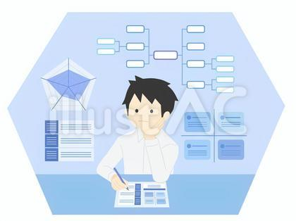
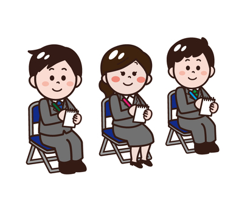
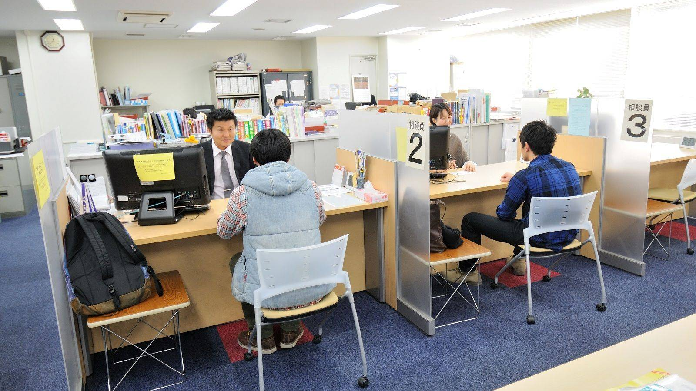

- トップ >
- 就職活動のはじめかた
就職活動のはじめかた
ついに始まる就職活動！初期段階でおさえておきたいポイントをまとめています。
①自己分析

まずは自分のことを知ろう。就活を進めるうえで特に重要といわれる就活の軸がここで決まってきます。自分には何が向いている？何がしたい？まずはなんでも良いんです。就活アプリの適性診断や性格分析などを活用して、自己理解を深めていきましょう。メモに書きだしてみるのも良いかもしれませんね。ここが固まっていないと、後々自分は何がしたいのかわからなくなって、途方に暮れてしまうことも起こり得ます。就活に大事なのはこの基盤です！自己分析に関しては専用のサイトがありますので、詳しく知りたい方はそちらも併せてご覧ください。
②業界研究
業界って何？どんな業界があるんだろう？自分に合った業界は何？…悩みは尽きないと思います。また、就活アプリ等の適性診断、適職診断を活用し、自分に合った業界を見つけましょう。意外な業界が自分に合っているかもしれません。業界はアプリ内での検索条件にもなります。ぜひ業界研究をやってみましょう。
③企業分析
毎日使うこのペンは、どの企業が作っているんだろう…？そんな些細な疑問からで大丈夫。まずはどんな企業があるのかを知ることから始めましょう。既に知っている企業が、全然違う事業を行っているかもしれません。たくさんある企業の中から、興味のある企業を探してみましょう。
④合同説明会、セミナーへの参加

実際に足を運ぶことで得られる気づきがあります。企業で働く人達の雰囲気、社風など、ここでしか得られない学びが沢山！実際に社会人の先輩達と話してみて、疑問に思ったことはその場で質問できます。沢山の企業の魅力を知ることができるチャンスです！
⑤大学のキャリアセンターの活用

みなさんにとって最も身近なのは、まずここでしょう。大学のキャリアセンターは求人の掲示やインターンシップの案内等、多岐にわたる就職支援を展開しています。就活に関して何か不明点があったら、まずキャリアセンターへ行ってみましょう。
⑥仕事体験、インターンシップへの参加
興味を持った業界や企業が見つかったら、実際にその企業で働いてみましょう！実際の仕事を体験することでそこに就職して働くイメージが湧いてきます。また、仕事体験の功績が選考や内定に直結するという企業も近年においては少なくありません。興味を持った企業にはまずエントリーして、仕事体験やインターンシップに応募してみましょう。